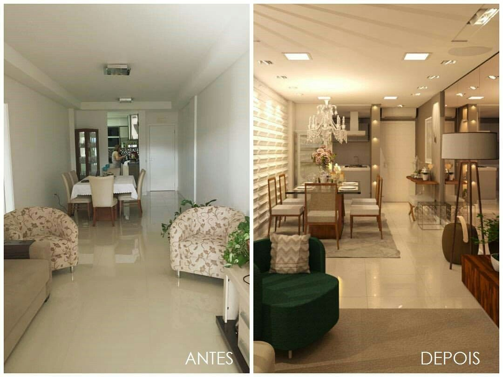
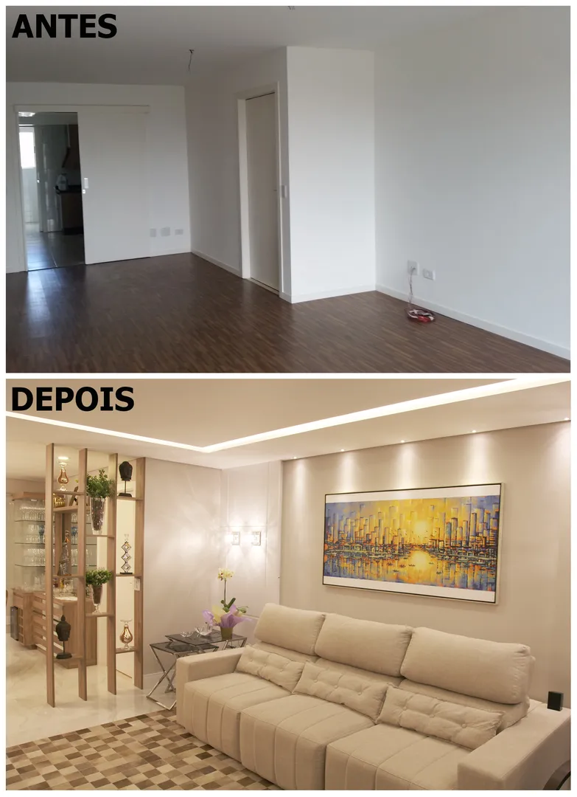

PROJETOS
Transforme suas ideias em realidade! Confira alguns dos nossos projetos
incríveis e entre em contato para criar algo único e especial para você.
Transformação impressionante! No projeto de antes e depois, transformamos um ambiente sem vida em um espaço funcional e estiloso. A partir das necessidades e desejos do cliente, reformulamos o layout, escolhemos materiais modernos e aplicamos um design inteligente para otimizar cada detalhe. O resultado? Um espaço renovado, mais acolhedor e perfeito para o dia a dia. Confira a transformação completa e inspire-se para o seu próprio projeto!
Antes e depois de um apartamento
Uma transformação de interiores surpreendente! Neste projeto, revitalizamos o ambiente de uma casa, criando um espaço mais moderno, funcional e acolhedor. No 'antes', os cômodos estavam sem personalidade e com uma distribuição que não aproveitava todo o potencial da área. Após a reforma, a casa ganhou novos acabamentos, com cores neutras e móveis planejados que maximizam o uso do espaço. A iluminação foi cuidadosamente trabalhada para criar um ambiente mais convidativo e confortável. O resultado final é um lar repaginado, onde cada detalhe foi pensado para proporcionar conforto e praticidade, tornando o ambiente mais harmonioso e perfeito para o dia a dia.

Transformação incrível de um apartamento! Neste projeto, transformamos um apartamento sem nada subutilizados e estilo desatualizado em um lar moderno e funcional. No 'antes', o apartamento tinha um layout sem nada e uma decoração sem personalidade. Após a reforma, criamos um design aberto, integrando os ambientes e otimizando cada metro quadrado. A escolha de móveis sofisticados, cores neutras e iluminação estratégica trouxe uma sensação de amplitude e aconchego. O resultado final é um apartamento elegante, com ambientes que transmitem conforto e praticidade, ideal para quem busca estilo e funcionalidade no dia a dia.
solicitar orçamento de produtos
VOLTAR